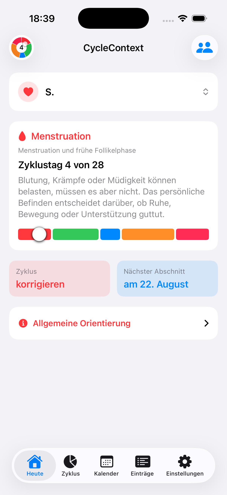
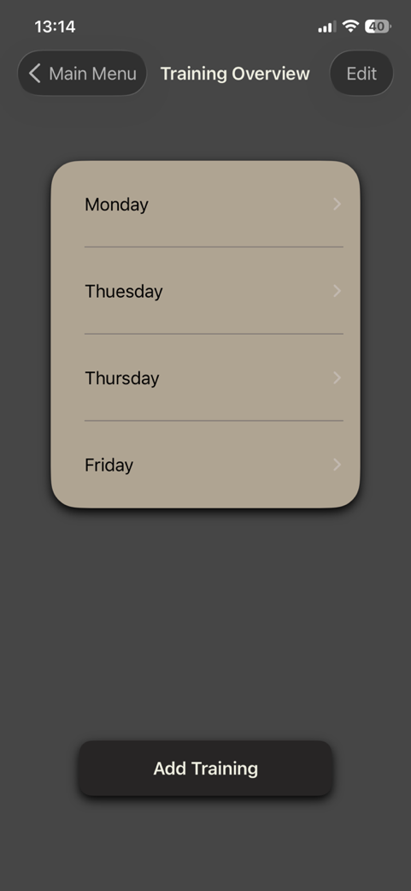

iOS-App · Fitness
Gymmix
Trainings planen, Sätze und Gewichte festhalten und Fortschritte im Gym oder zu Hause verfolgen.
Portfolio · Web · Apps · Tools
Ausgewählte Projekte, bei denen aus einer Idee etwas wird, das Menschen gerne nutzen.
Ausgewählte Arbeiten
Elf Projekte aus Apps, Web und digitalen Werkzeugen — jedes mit einer kleinen Vorschau.
iOS-App · Fitness
Trainings planen, Sätze und Gewichte festhalten und Fortschritte im Gym oder zu Hause verfolgen.

iOS-App · Gesundheit
Eine ruhige iPhone-App, die Zyklusabschnitte einordnet und persönliche Daten lokal auf dem Gerät hält.
iOS-App · Produktivität
Digitale Visitenkarten gestalten, vorhandene Karten erfassen und Kontakte direkt vom iPhone teilen.
Laden imApp StoreEigenes Webprojekt · Produktdesign
Mein Bento-Software-Webprojekt mit Animationen und einer klaren Präsentation der Apps.
ProjektseiteWebplattform · Kunst
Eine Galerie-Website für Kunst aus Nunavut, Kanada. Neue Arbeiten erscheinen automatisch aus dem Instagram-Auftritt der Galerie.
ProjektseiteKonzept · Web-Rechner
Ein interaktiver Entwurf, der die Kosten von Gasheizung und Wärmepumpe anhand eigener Annahmen vergleicht.
ProjektseiteBereit für heute?
Hey Alex! Was knacken wir heute?Mathe · Klasse 5 · Weiterlernen
App · Bildung
Eine Lern-App für Klasse 5 bis 8 mit Lernpfaden, Quiz-Quests und Fiete als Tutor.
Nizäno-Konstantinopolitanisches Glaubensbekenntnis
Wir glauben an den einen Gott, den Vater, den Allmächtigen.Erklärungen zu Begriffen und Themen
Web · Wissen
Texte zum orthodoxen Glaubensbekenntnis und zur Katechese digital zugänglich gemacht.
Projektseite
Web · Dokumentation
Ein digitales Handbuch mit Dokumentation und Anleitungen für Gymmix.
Leistungs- und Verhaltensbeurteilung
Speichern · Laden · DruckenYouTube-Wissensdateien im Handumdrehen erzeugen
YouTube URL / Video-ID 1 · Setup & MetadatenTool · Sprache
Ein Tool zum Transkribieren und Übersetzen von YouTube-Videos mit KI-Unterstützung.
ProjektseiteEin bisschen über mich
Ich bin Alexander Kaufmann. Ich mache digitale Ideen erlebbar und entwickle Websites, Apps und Werkzeuge, die Dinge im Alltag einfacher machen.
Mehr über meine Arbeit auf GitHubKontakt
Schreib mir auf GitHub — ich freue mich, von deinem Projekt zu hören.
Auf GitHub schreiben